Manual de Instalación
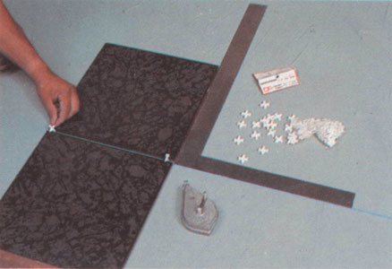
Paso 1
Utilizando dos losetas se elige la dirección que va a llevar el piso, usando 2 separadores en forma vertical para darles la separación deseada. (En este caso se usó separador de 1⁄4").
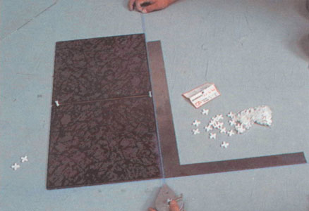
Paso 2
Se marca la primer línea de la escuadra.
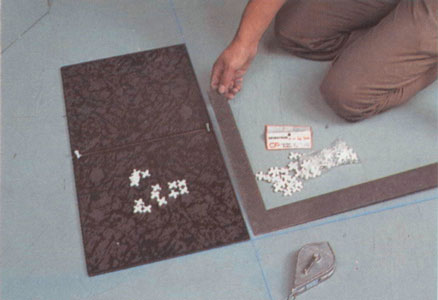
Paso 3
Se marca la segunda línea de la escuadra.
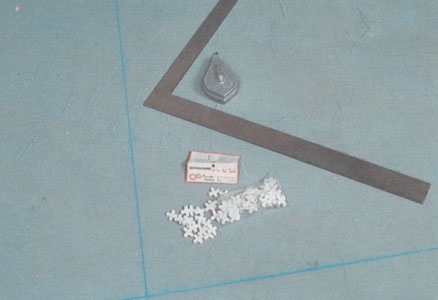
Paso 4
Se obtiene la escuadra final.
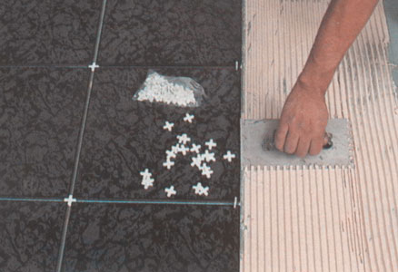
Paso 5
Se esparce el pegazulejo usando una llana dentada.
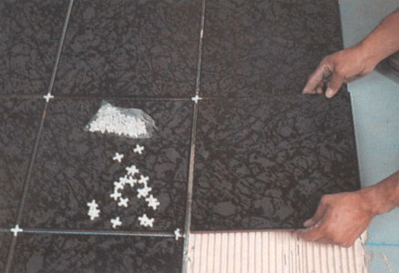
Paso 6
Se acomoda la pieza siguiente a pegar, utilizando como guía el separador horizontal que esta entre las 2 piezas vecinas.
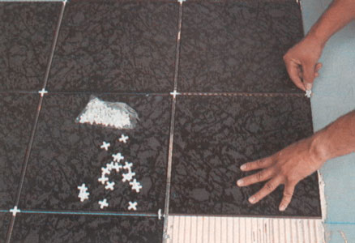
Paso 7
Se usa un separador en forma vertical para alinear la parte superior derecha de la pieza a pegar con la pieza superior vecina.
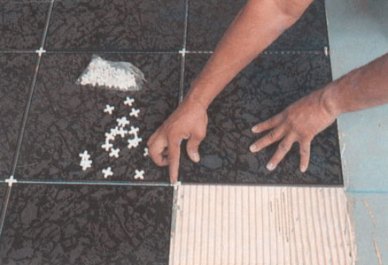
Paso 8
El separador vertical que se habia utilizado para alinear una pieza anterior se empuja en forma horizontal en la intersección de las 3 piezas que resulta en la parte inferior izquierda de la pieza recien instalada, dejando la preparación para recibir la siguiente pieza, y alineando a la vez la pieza recien instalada con la pieza a la izquierda.
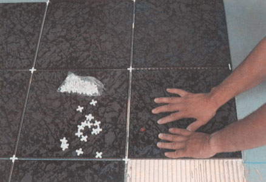
Paso 9
Se hace una presión final sobre la pieza instalada y se prosigue con el paso 6, 7 y 8 hasta terminar de instalar.
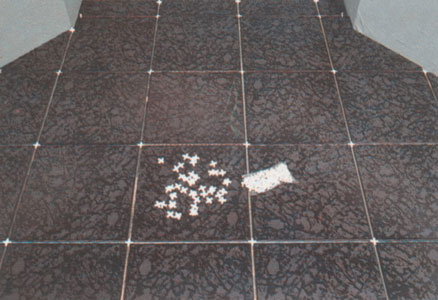
Paso 10
Colocación final antes de emboquillar.
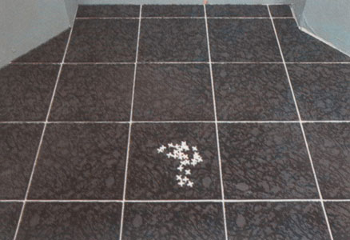
Paso 11
Después de retirar los separadores se emboquilla logrando una instalación perfecta. (Para separaciones de 1⁄8" ó más se puede usar boquilla de color con arena, la cual sella por completo y evita las cuarteaduras.